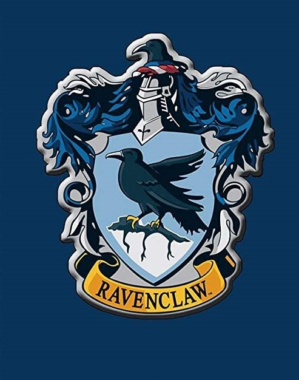
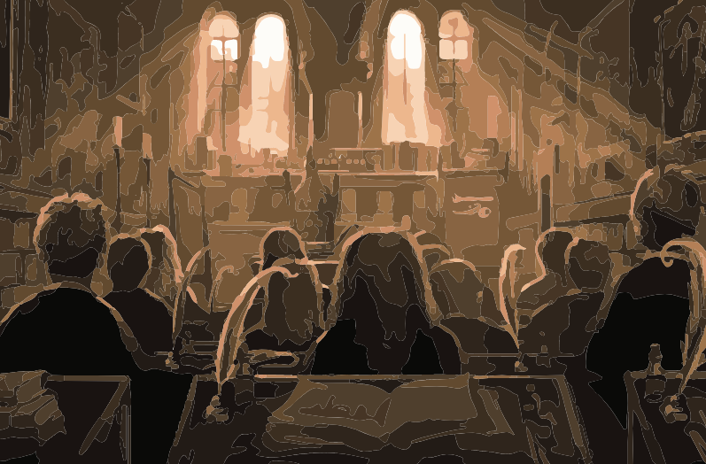
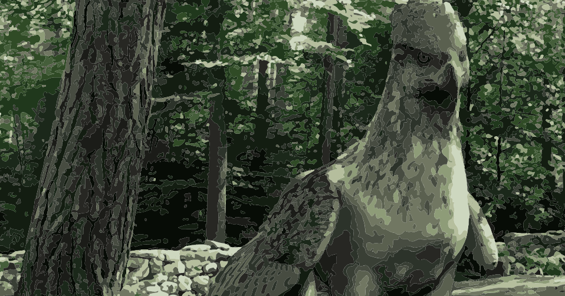

Hogwats é o palco principal da saga de livros Harry Potter, da autoria de J. K. Rowling.
O Castelo de Hogwarts está localizado na Escócia, num local desconhecido , próximo da vila de Hogsmeade. Os Muggles (humanos sem magia) não conseguem nem ver, nem localizar a escola uma vez que esta possui imensos feitiços e encantamentos de proteção, sendo que os Muggles apenas vêm ruínas e sinais de aviso para se afastarem. O castelo possui longos terrenos cobertos de relva, um campo de Quidditch , um lago (chamado de O Lago Negro), uma grande e densa floresta (chamada de Floresta Proibida), entre outras construções. Existem també 142 escadarias no castelo de Hogwarts que se movem.
Em Hogwarts não existe nem eltrecidade nem dispositivos eletrónicos à exceção de rádios, que não são alimentados por eletricidade, mas sim por magia.
Casas de Hogwarts
Em Hogwarts, todos os alunos no primeiro dia são selecionados para uma de quatro casas, sendo elas: Gryffindor, Ravenclaw, Hufflepuff e Slytherin.
A seleção é feita pelo Chapéu Selecionador, um artefacto mágico que determina magicamente a casa de cada aluno. No banquete de abertura de início de ano, os alunos do primeiro ano colocam o chapéu e após um momento, o chapéu grita em voz alta o nome da casa a qual o aluno irá pertencer. A seleção tem em conta a personalidade e habilidades do(a) aluno(a), uma vez que as casas foram criadas e apelidadas pelos próprios fundadores de Hogwarts, representando as características que cada um prezava.
Gryffindor

Gryffindor é uma das quatro casas de Hogwarts, fundada por Godric Gryffindor, e a professora Minerva McGonagall é a chefe/diretora da casa.
A mascote da casa é o leão e as suas cores são vermelho escarlate e dourado. De acordo com a J. K. Rowling a casa representa o fogo.
As características dos alunos escolhidos para os Gryffindor são: coragem, ousadia, determinação, audácia e atrevimento.
A Sala Comum dos Gryffindor fica no 7º andar da escola, na torre dos Gryffindor e a entrada é guardada pela Dama Gorda. A entrada é permitida a quem disser a senha corretamente.
Ravenclaw

Ravenclaw foi fundada por Rowena Ravenclaw. O professor Filius Flitwick é o chefe/diretor da casa.
As cores da casa são o azul e o bronze, a sua mascote é a águia e representa o ar.
Os alunos Ravenclaw são inteligentes, criativos, perspicazes, prudentes e estudiosos. Esta destaca-se ainda por ser mais aberta a receber estudantes que fossem vistos como diferentes por outros, priorizando a inteligência.
O fantasma da casa Ravenclaw é a Dama Cinzenta, conhecida no último livro por Helena Ravenclaw, filha da fundadora Rowena Ravenclaw.
A Sala Comum dos Ravenclaw fica no lado oeste de Hogwarts, na torre dos Ravenclaw. Para acessar a sala comum, tem de se responder a um enigma lógico.
Hufflepuff

Hufflepuff foi fundada por Helga Hufflepuff. A professora Pomona Sprout é a chefe/diretora da casa.
As cores da casa são o amarelo e o preto e a sua mascote é o texugo. A casa Hufflepuff representa o elemento Terra.
Contudo, vários integrantes da casa já comprovaram que também possuem muitas das características valorizadas por Grifinória, Sonserina e Corvinal. Newt Scamander, por exemplo, destaca-se por sua inteligência e seus amplos conhecimentos em magizoologia, bem como por sua coragem.
Os Hufflepuff são leais, trabalhadores, pacientes, justos, dedicados e verdadeiros.
A entrada para a Sala Comum dos Hufflepuff está oculta numa pilha de grandes barris, no corredor que dá para a cozinha de Hogwarts.
Slytherin
Slytherin foi fundada por Salazar Slytherin. Até ao quinto livro, o professor Severus Snape é o chefe/diretor da casa, e a partir do sexto livro, o professor Horace Slughorn deixa a sua reforma e retorna a Hogwarts como e chefe da casa Slytherin. A mascote da casa dos Slytherin é a serpente e as cores da casa são o verde e o prateado. A casa Slytherin representa a água.
As características dos alunos selecionados para os Slytherin são: ambição, astúcia, liderança, desembaraço e individualismo.
A entrada para a sala comum dos Slytherin fica nas masmorras, atrás duma porta escondida. À semelhança da sala comum dos Gryffindor, deve ser dita uma senha para a porta, escondida na parede, se abrir.
Matérias de Hogwarts
A Escola de Magia e Feitiçaria de Hogwarts é referência internacional no ensino da magia, a grade curricular dos cursos tem diversas matérias.
No primeiro ano os alunos devem cumprir as matérias obrigatórias, e depois, a partir do terceiro ano, além das matérias obrigatórias podem escolher dentre as disciplinas opcionais quais querem estudar. No quinto ano, os alunos prestam o N.O.M. das matérias que escolheram para determinar se podem, ao atingir nota suficiente, prestar o N.I.E.M. no ano seguinte.
Feitiços
É o tipo de magia em que se pode encantar um objeto para que ele aja de maneira diferente do normal. A disciplina de Feitiços engloba praticamente tudo que não seja Transfiguração, magia que muda a natureza de um objeto. Um feitiço pode fazer um objeto piscar de cores variadas, pode fazer algo levitar, pode fazer uma pessoa dançar ou rir, pode criar uma bolha de ar em volta da cabeça de alguém. Em todos esses casos, o objeto ou a pessoa não sofre modificações, apenas faz uma coisa inesperada, diferente do habitual.
Transfiguração
A Transfiguração é a arte da transformação através da magia, ou seja, a mudança da natureza da matéria. Alunos até o quinto ano aprendem tópicos da transfiguração de objetos e animais, também os feitiços de conjuração que no máximo fazem aparecer coisas pequenas e de desparecimento.
Poções
Em Poções, os alunos aprendem a fabricar, manusear e utilizar poções, antídotos e soros. Essas misturas, na maioria das vezes devem ser bebidas para criar o efeito esperado. Os ingredientes vão do mais comum ao mais bizarro e fantástico, e os procedimentos para criar as poções podem ser complicados e levar bastante tempo.
Herbologia
A Herbologia estuda plantas mágicas em geral, os fungos e suas propriedades, incluindo como cuidar das plantas, suas propriedades mágicas e seu uso. Algumas plantas mágicas são ingredientes básicos para poções, outras fazem efeito por conta própria. É uma matéria relativamente simples mas exige muito cuidado pois a maioria das plantas são venenosas ou atacam quem as toca. Com o passar dos anos os alunos estudam plantas de manuseio mais difícil e delicado. As aulas de Herbologia são ministradas nas estufas e incluem trabalhos manuais, como replantar mandrágoras, cuidar de Bubotúberas (cujo pus puro causa bolhas na pele e é usado no combate às espinhas), lidar com Arapucosos.
Vôo
Nesta matéria aprende-se como voar corretamente numa vassoura. Se o aluno quiser se aprofundar, as aulas passam a ser matéria extracurricular.Vôo é praticado ao ar livre, porém, também tem sua sala de aula, para a aplicação de provas, e aulas com utilização do material de escrita e leitura.
História da Magia
A História da Magia é lecionada há muito tempo por um fantasma, o Professor Binns. Os alunos aprendem sobre episódios da história do mundo mágico, como as Rebeliões dos Duendes(século XVII) e as Guerras dos Gigantes (século XIX).

Astronomia
Astronomia é onde dão-se interpretações mágicas a certos fenômenos. As aulas costumam ser a noite, na torre própria da matéria, a mais alta de Hogwarts
Adivinhação
Adivinhação é uma matéria de Hogwarts que ensina como ler folhas de chá, ler a palma da mão, bolas de cristal e ainda como interpretar sonhos. Como o próprio nome já diz, é uma arte mágica voltada para o futuro, e os aprendizes devem ter em mente que nem sempre as adivinhações estão corretas, sendo assim um ramo muito cheio de hipóteses.
Trato das Criaturas Mágicas
Trato das Criaturas Mágicas é uma matéria de Hogwarts que ensina como tratar as criaturas do mundo mágico. Nos primeiros anos os alunos estudam criaturas pouco perigosas como crupes, amassos, vermes-cegos e tronquilhos. Conforme se passam os anos, as criaturas estudadas vão desenvolvendo mais complexidades e tornando-se verdadeiros desafios para os alunos.

Defesa contra as Artes das Trevas
Esta é uma matéria obrigatória na Escola de Magia e Bruxaria de Hogwarts, na qual os alunos aprendem como se defender magicamente contra Criaturas das Trevas e contra as Artes das Trevas.